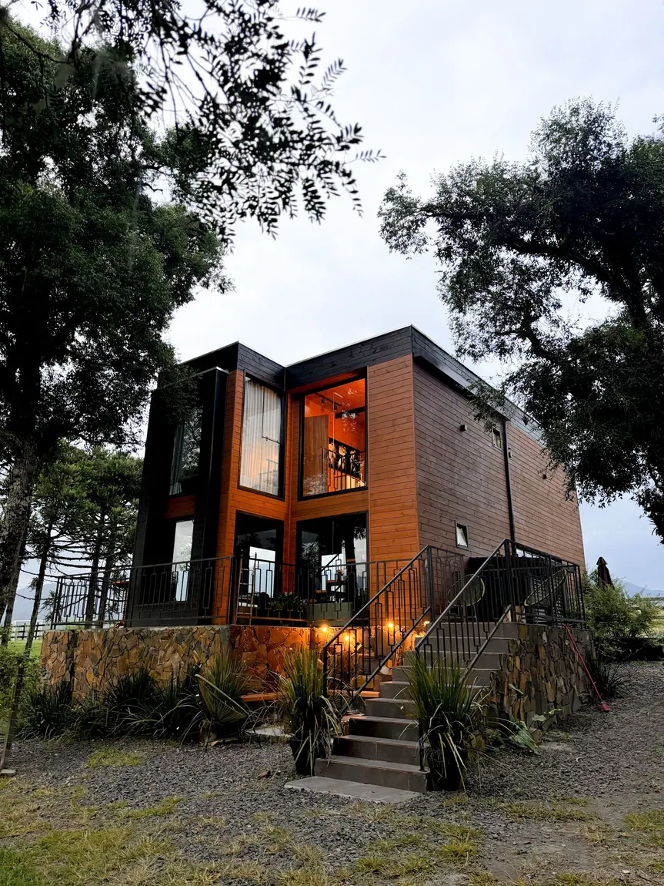
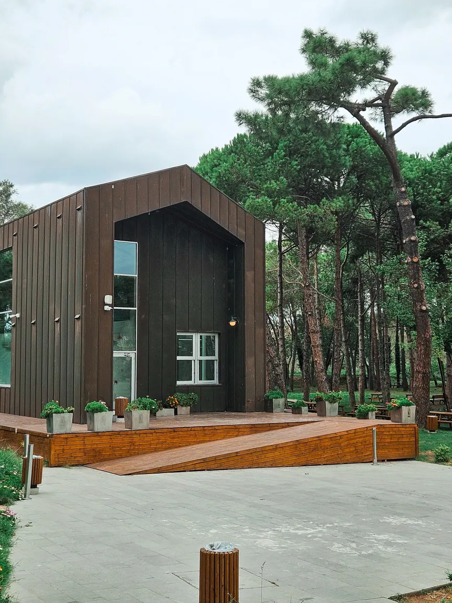
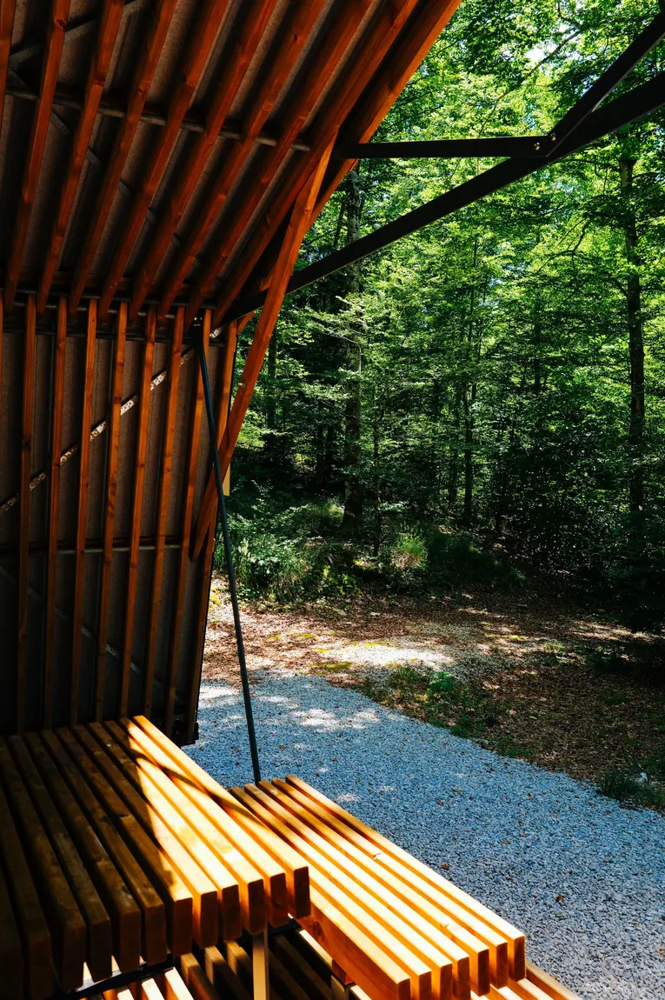
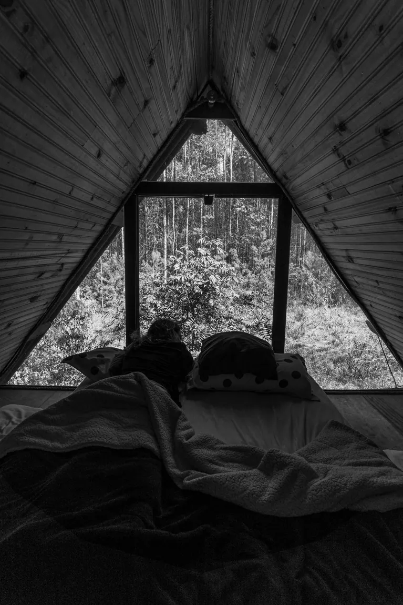
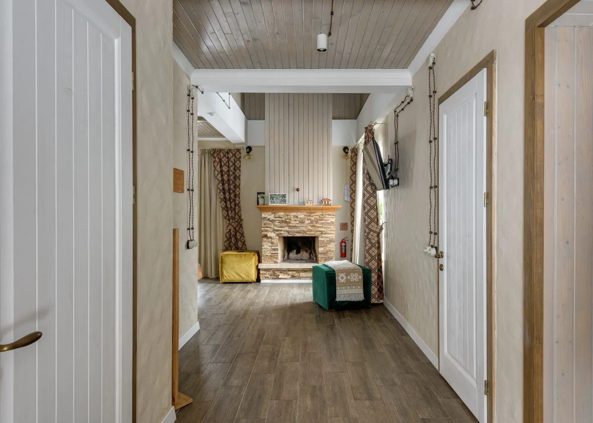
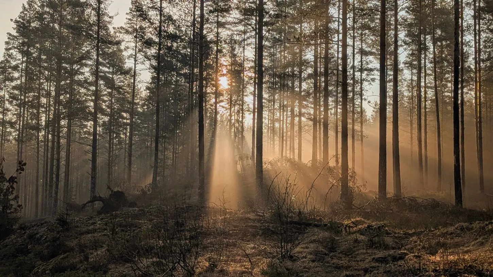
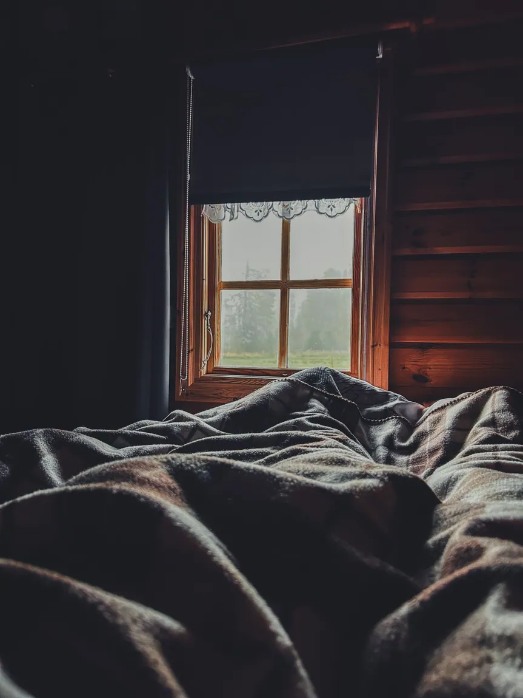
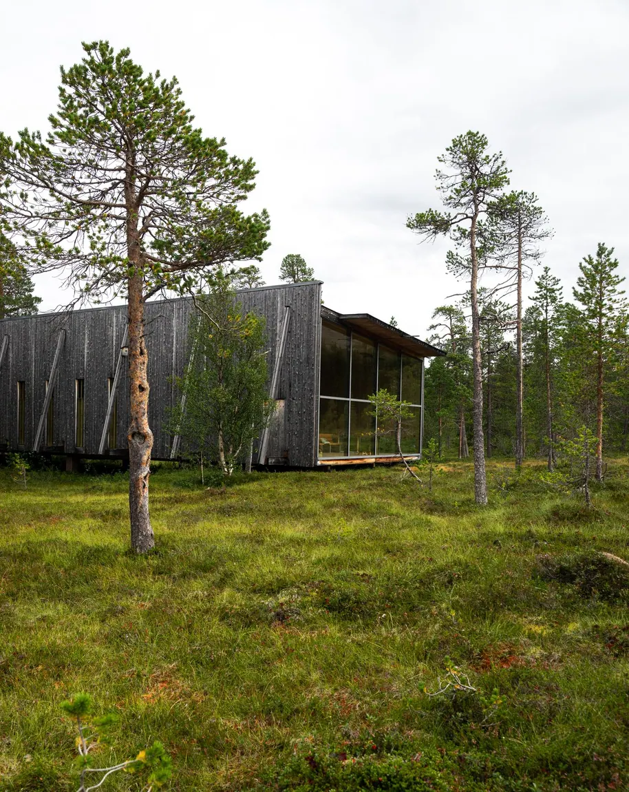
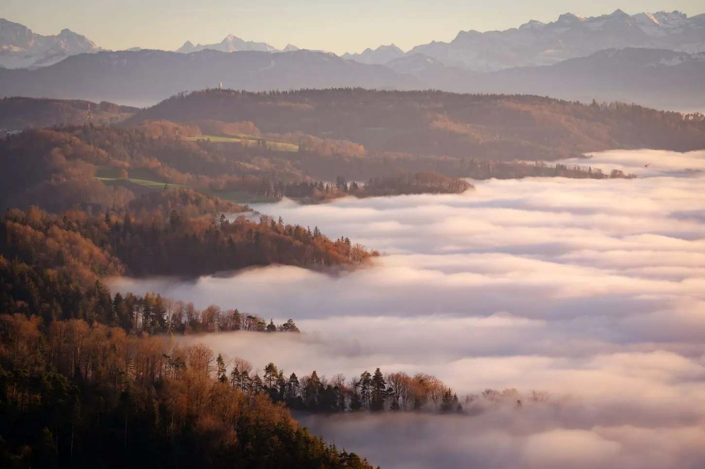

NEJOBLÍBENĚJŠÍ VOLBA01 / PRO DVA AŽ ČTYŘI
Chata Borovice
Hřejivé dřevo, ranní světlo a terasa, ze které se nechce odejít.
od 3 200 Kč / noc
Rána, která nikam nespěchají. Vůně dřeva, výhledy do zeleně a prostor jen pro vás. Vyberte si svůj malý únik.
Nejhezčí dny někdy začínají tím, že nemusíte vůbec nic. MEZI LESY je fiktivní kolekce osobitých útočišť, kde se přírodní klid setkává s promyšleným pohodlím.
PROHLÉDNOUT UBYTOVÁNÍ ↗Tři různé nálady. Jediný společný jmenovatel: prostor jen tak být.

NEJOBLÍBENĚJŠÍ VOLBAHřejivé dřevo, ranní světlo a terasa, ze které se nechce odejít.

PRO POMALÉ VÍKENDYVíc prostoru pro společné večeře, hry a dlouhé rozhovory.

JEN PRO VÁS DVAMalé místo s velkým výhledem. Ten nejlepší důvod vypnout.
Všechna ubytování, jejich vybavení a ceny jsou ukázkové. Toto je nezávazný DEMO projekt.

Nemusíte stihnout všechno. Vlastně nemusíte stihnout vůbec nic.

Čas na knížku, čaj a rozhovory bez notifikací.

Procházky, při kterých je cesta sama cílem.

Malé rituály, které se stanou velkými vzpomínkami.
Skutečné ilustrační fotografie přírody a rekreačních staveb — galerie slouží jako vizuální inspirace.
Fotografie jsou ilustrační; nejedná se o snímky skutečných prostor provozovaných značkou MEZI LESY.
Orientační demonstrační ceny. V kalkulačce hned uvidíte odhad za váš pobyt.
Vyberte datum, počet hostů a doplňky. Předběžnou cenu spočítáme ihned. Vše funguje jako bezpečná ukázka bez skutečné rezervace nebo platby.

Protože dobrý pobyt začíná tím, že máte jasno.
Ne. Toto je ukázkový web fiktivní značky. Formulář vytváří pouze místní náhled rezervace a nic nikam neposílá.
Všechny ceny jsou pouze demonstrační, vytvořené pro prezentaci funkčnosti webu. Kalkulace není závaznou nabídkou.
Počet nocí násobíme cenou vybrané chaty. Od čtyř nocí odečteme 10 % ceny ubytování a poté připočteme vybrané doplňky.
Pro demonstraci počítáme s poplatkem 350 Kč za mazlíčka a noc. Skutečná pravidla ubytování by se vždy potvrdila s provozovatelem.
MEZI LESY je fiktivní koncept, proto nemá skutečnou adresu ani mapový bod. Fotografie jsou ilustrační.
Tato ukázka používá jednotné ceny po celý rok. V reálné realizaci lze snadno doplnit sezónní ceny a kalendář obsazenosti.
